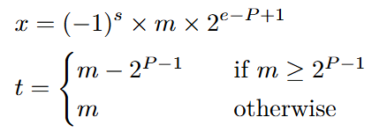

Builds a comprehensive formal model of the IEEE-P3109 low-precision floating-point standard in Lean and verifies properties of algorithms like FastTwoSum.
Abstract
The upcoming IEEE-P3109 standard for low-precision floating-point arithmetic can become the foundation of future machine learning hardware and software. Unlike IEEE-754, P3109 introduces a parametric framework defined by bitwidth, precision, signedness, and domain. This flexibility results in a vast combinatorial space of formats – some with as little as one bit of precision – alongside novel features such as stochastic rounding and saturation arithmetic. These deviations create a unique verification gap that this paper intends to address. This paper presents FLoPS, Formalization in Lean of the P3109 Standard, which is a comprehensive formal model of P3109 in Lean. Our work serves as a rigorous, machine-checked specification that facilitates deep analysis of the standard. We demonstrate the model's utility by verifying foundational properties and analyzing key algorithms within the P3109 context. Specifically, we reveal that FastTwoSum exhibits a novel property of computing exact "overflow error" under saturation using any rounding mode, whereas previously established properties of the ExtractScalar algorithm fail for formats with one bit of precision. This work provides a verified foundation for reasoning about P3109 and enables formal verification of future numerical software. Our Lean development is open source and publicly available.
Problem
The upcoming IEEE-P3109 standard for low-precision floating-point arithmetic introduces a parametric framework with a vast combinatorial space of formats and novel features (stochastic rounding, saturation arithmetic), creating a verification gap not addressed by existing IEEE-754 formalizations.
Approach
FLoPS formalizes P3109 floating-point representations in Lean 4, establishing a "Triangle of Correctness" consisting of a bit-level representation, an algebraic model, and a semantic value set connected by formally verified bijections. The framework covers encoding/decoding, rounding modes, and analyzes the FastTwoSum and ExtractScalar algorithms under P3109 semantics.

Figure 1 : The binary encoding of finite floating-point numbers. For a finite x , t represents the P-1 trailing bits of x ’s significand m . B and W each represent the exponent bias and bitwidth.
Results
The development comprises approximately 15,000 lines of Lean code covering P3109 bit-encodings, the algebraic model, isomorphism proofs, and algorithm analyses. During formalization, the authors discovered multiple errors in the draft P3109 standard itself.